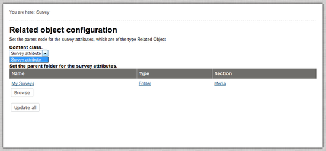

Enable the extension in eZ Publish by editing "site.ini.append(.php)" in the ezpublish_legacy/settings/override folder of your eZ Publish installation. It is possible that this file does not exist, if so it must be created.
In "site.ini.append(.php)" you must add "ActiveExtensions[]=ezsurvey" to the block [ExtensionSettings]. It will then most likely look like this:
[ExtensionSettings] ActiveExtensions[]=ezoe ActiveExtensions[]=ezodf ActiveExtensions[]=ezwebin ActiveExtensions[]=ezsurvey
If you are running several sites using only one distribution and only want specific sites to use the extension, make the changes in the override file of that specific siteaccess. For example in ezpublish_legacy/settings/siteaccess/news/site.ini.append(.php). In this case you must add the line "ActiveAccessExtensions[]=ezsurvey" to the [ExtensionSettings]
By running the php script from command line an array of classes is build that are used by the autoload system in PHP. You also need eZ Components to run the following script.
The following script needs to be executed from the <eZ Publish root>/ezpublish_legacy/ folder:
$ php bin/php/ezpgenerateautoloads.php --extension
If you don't have eZ Components you can download it at eZ Components
Clear the caches, for the "Survey" option to show up in the top menu:
$ php ezpublish/console cache:clear --env=prod
Next you must configure eZ Survey. This can be done with a wizard or manually:
With eZ Survey Wizard
When you navigate to Survey in the Administration Interface for the first time, you will automatically be redirected to the Wizard. Via the Import Database tables page the necessary tables will be imported which eZ Survey uses to store content.
The Import Survey Content Classes page will let you install the eZ Survey packages which contain two content classes, "Survey attribute class" and "Survey class". The "Survey attribute class" will be used when you create a new survey content object and is needed to configure the feature to be able to add a related object between the questions in a survey. This class should contain at least one XML block attribute (which is used to show content on the web) and one Text block attribute (which will be used in notification emails sent to the receiver). This class can be used to place formatted content between each question of the survey. The content may be embedded between each question when you create the survey itself.
The "Survey class" is the survey itself. Preferably, this class contains at least a text and a survey attribute. The text field should be used as the header of the object. You can add as many Survey classes as you wish.
Both classes can also be added manually in the Administration Interface.
If you choose the automatic installation you will be shown the Configuration page, where you will only be able to select the survey attribute content class.

Select the parent class where the content of the new survey attributes should be stored. It's useful to create a new folder for this purpose. Through both the "create new" and the "Browse" button you will automatically be redirected to the Media Library, but you can store your surveys at another location if you prefer.
The eZ Survey wizard is now finished and you are able to create new surveys. The Survey-link at the top of the administration interface will bring you back to the Survey Wizard until your setup is finished. The wizard will automatically detect if the necessary classes are installed and your location in the setup. Once your setup is finished you will be able to view the survey list here or change the related object configuration.
Make sure the permissions are set to allow the survey to be read and filled in by anonymous users. This must be done through the "Roles and Policies"-link, which can be accessed both in the left menu under the "Setup"-tab, as in the left "Access control" menu under the "User Accounts"-tab.
Manual Configuration
If you already have a working eZ Publish installation running you can skip the next steps and go directly to step “Create the schema for eZ Survey”.
- Initialize schema:
The schema must be created with all the tables, sequences and triggers for eZ Publish and then be filled with data. You can start by inserting the schema for the extension and then filling it with the basic data.
Create the schema for eZ Publish
The following script needs to be executed from the <eZ Publish root>/ezpublish_legacy/ folder:$ ./bin/php/ezsqlinsertschema.php --type=<dbtype> --user=<user> \ --password=<password> --host=<hostname> \ share/db_schema.dba <dbname>
Insert data for eZ Publish:
The following script needs to be executed from the <eZ Publish root>/ezpublish_legacy/ folder:$ ./bin/php/ezsqlinsertschema.php --type=<dbtype> --user=<user> \ --password=<password> --host=<hostname> \ --schema-file=share/db_schema.dba \ --insert-types=data \ share/db_data.dba <dbname>
Next you must create the schema for eZ Survey. The SQL schema for the eZ Survey extension is located in ezpublish_legacy/extension/ezsurvey/sql/<database-implementation>/schema.sql and can be run with for example:
mysql -u<username> -p <dbname> < ezpublish_legacy/extension/ezsurvey/sql/mysql/schema.sql
- Configure eZ Survey
- You need to create two new content classes: one for the actual survey, the "Survey Class", and another for the survey attributes, the "Survey Attribute Class". You can add the necessary content classes through manual installation or add them from a package.
- The "Related object" for the survey attribute must also be configured. This can be done via the Survey-tab in the Administration Interface, where you can click on the "Related object configuration"-link in the left menu. Choose the "Survey Attribute" content class and define the parent folder for the survey attributes with the "browse"-button. It is best that you create a new content folder to store the survey attribute objects. Press "Update All" when you've made your selection.

- Make sure the permissions are set to allow the survey to be read and filled in by anonymous users. This must be done through the "Roles and Policies"-link, which can be accessed both in the left menu under the "Setup"-tab, as in the left menu "Access control" under the "User Accounts"-tab.
- Now you are able to create a new survey.